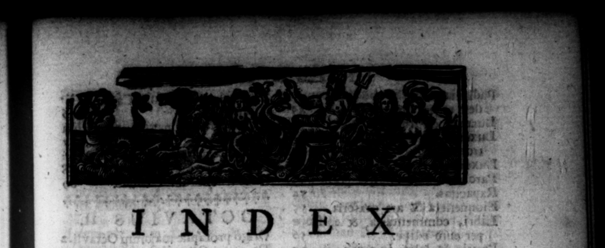

ken RUM Ordine ad" IPP. Groranmn: 5 ULIUSCESAR. Cap. - | Amicitia regum, & + ois NC Prima Cæſaris milit N alleta' per eum, cum ri Secund:z militia, & wbem Senatus contra eum facto. redliens. ; 3 Proviſſo contra decretum SeAcguſatio Dolabellz. 5 natus. 899991 Tribunatus militum, & alia ye Cauſe ballrum divilium, 30 eum geſta. | Progrefſus a Ravenna ad * Quæſtura, & alia gelta, 1 2 conem, Cemitus Caſaris apud ſtatyam | Oltentum factum apud Rubico- , Lagni ALEX ANDR1, & ſom- nem Cæſari dubit anti. 32 nium de matris concubitu. 2 Tranſitus Rubicon's, & eius nGeſta per eum in urbe. 8 cio. 130 Suſpicio conjurationis inice cum Adventus in urbem, & Alia Craſſo, & Sulla, 9 geſta, 59880 Kdilitas, & geſta in ea, 10 Victoria contta Pompejum, Podez — eum in urbe. 11 lemzum, & quoſdam alior. 375 dem geſtis. 12 Czlaris, & — pe ſuarum, | pool atus maximus, „ „ eee e airs +301 Pretura, & geſta alia. 14 Trivmphi, Geſta in odio — 15 De — — & 3 ie? a Prætura, & item — ) tate per eum 7 Le ratio. M 7 / AZ 2 ob conjurationem Cari van ſpoatacals per enm Ales. N 39 Ulerios, "Hifania ei ſorts mY Ordinatho anni & Faſlorum, ne | æturam. „ eam facta. I cum Bibulo, —— . — _ dopple E ta pereum in Conſulatu. 20 mentuns& ;ondjinati9%; 44 Calpurniam ducit uxorem & Ju- Sauctiones per eum edit. 4 lam ſuam Pom pe jo tradit. 41 Labor in jure dicendoy && leges, fi ium Galliarum ei concelſang per eum edit. 43 poſt Conſulatum. ly 1 Deſtinatio de ornanda urbe, 2 Accuſatio geſtorum Confulanus Imperia iando. 17 9 eius. 23 Statura, & cultus corporis. 4 De Dorit io minante-Ceſari; & Habitatio, & * vz geſtis per eum in Galla, 24 Cafaris. . | * 408+). Alia geſta per eum i Galla. 275 Cupitlitas circa —— r Mors matris, filiæ, & r & tas, & ſigua operis antiquu 47 alia per eum geſta. | Convivia & n diſcigina Affinitas cum Pompejo- * —. ſuorum. a 11 0 e & alia geſta. 27 ad 60 2 ed B h Pad iy * F
